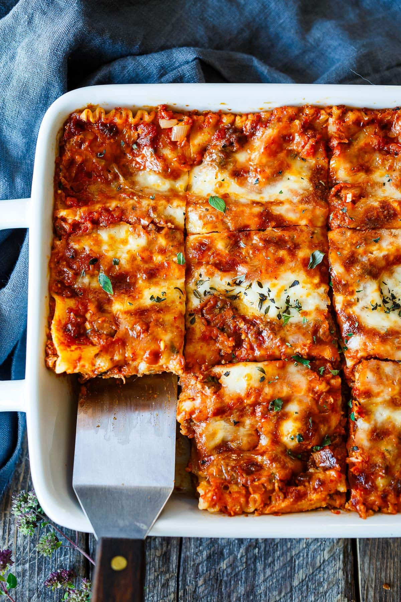

Lasagna Recipe

Original Italian Lasagna
This is a recipe my grandma used to cook when I visited her in Naples.
Its tasty, juicy and reminds me of the good old days when I came home
from the beach and was greeted by this irresistible smell of melted cheese.
It's also quite simple but requires a bit of time in the oven. But after
around 90 minutes you will be rewarded with a baking tin full of flavour.
Ingredients
- Noodles
- Tomatoes
- Cream
- Cheese
- Meat
- Nutmeg
- Tomato Paste
- Onions
- Wine
- Butter
- Flour
- Bay leaf
Steps
- First you need to cook the sauces
- Fry the meat with onions and then deglaze with wine
- The second sauce is a béchamel sauce. First add the butter to a new pan.
- Then sprinkle in the flour and stir well. The flour should not turn brown.
- Then add the milk and bring to the boil while stirring.
- Continue to cook over a low heat until the sauce thickens.
Back home